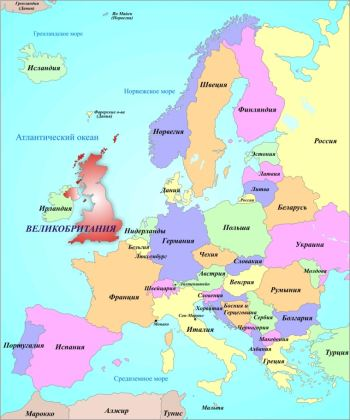
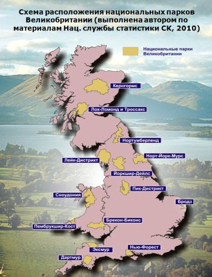
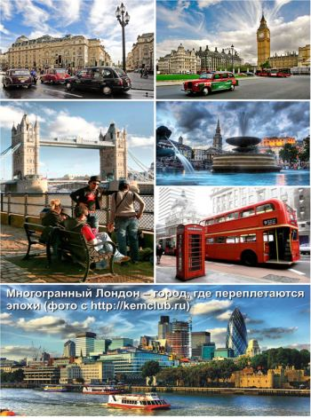
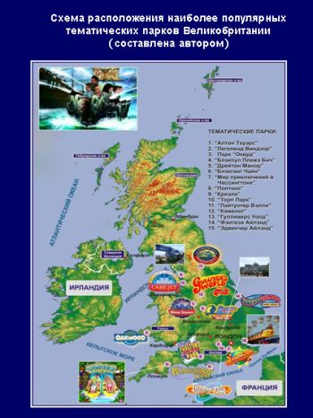
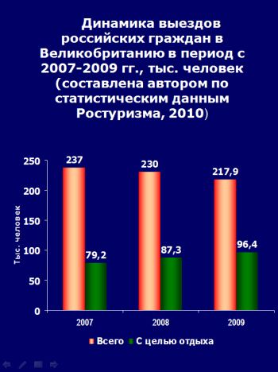

Хорошева (Нечепоренко) А.А. окончила в 2005 г. среднюю школу 5 г. Ейска (Краснодарский край) с золотой медалью, в 2010 г. – ЮФУ с красным дипломом. Неоднократно признавалась победителем факультетских студенческих конференций по проблемам международного туризма, проводимым на английском и немецком языках.
Электронный адрес: a.horosheva@gmail.com
Научный руководитель – доцент Р.И. Сухов
Отзыв научного руководителя доц. Р.И. Сухова на дипломную работу А.А. Хорошевой «Характеристика туристских ресурсов и особенностей функционирования индустрии туризма Великобритании»
Представленная Анастасией Анатольевной дипломная работа является качественным, глубоко проработанным, аналитическим трудом, выполненным в классической для данной тематики форме. Великобритания является одной из стран - родоначальников туристской индустрии, а жители Соединенного Королевства наиболее часто путешествующими туристами. Тем сложнее сказать что-то новое, либо представить уже известные факты в оригинальном виде.
Следует отметить, что материалы, касающиеся туриндустрии Великобритании и особенно статистические данные, публикуются, в основном, на английском языке и автор проделал кропотливую работу, переводя специализированные тексты и используя оригинальные источники. Поэтому информация, представленная в дипломной работе отличается взвешенностью и достаточно высокой степенью объективности.
Выводы, представленные автором полностью соответствуют цели и поставленным задачам.
Дипломная работа соответствует предъявляемым требованиям и при успешной защите может быть оценена на «отлично».
Научный руководитель к.г.н., доцент Р.И. Сухов
Доклад А.А. Хорошевой на защите дипломной работы на тему: «Характеристика туристских ресурсов и особенностей функционирования индустрии туризма Великобритании»
Уважаемый председатель и члены комиссии, представляю Вашему вниманию дипломную работу на тему: «Характеристика туристских ресурсов и особенностей функционирования индустрии туризма Великобритании».
Великобритания, страна зарождения современного массового туризма, где загадочные памятники кельтов соседствуют с ультрасовременными деловыми кварталами, является одним из наиболее популярных туристских направлений. Располагая высоким уровнем развития туруслуг, страна прочно занимает 5-7 место в мире по показателям прибытий и доходов от туризма. Несмотря на сложную процедуру получения виз и высокие цены на турпродукт, Соединенное Королевство пользуется стабильным спросом у россиян.
Великобритания имеет самое непосредственное отношение к истории туризма. Еще в начале XVIII в. остальные европейцы стали именовать англичан нацией путешественников. А в середине XIX в., благодаря деятельности Томаса Кука, Британия превратилась в колыбель массового туризма. Британское направление занимает прочные позиции на российском рынке и, несмотря на пресловутый экономический кризис, за последние годы не только не потеряло популярность, но и продолжает развиваться. Все больше российских туристских организаций искушает соотечественников возможностью прикоснуться к атмосфере «старой доброй Англии». Британский турпродукт весьма разнообразен и специфичен, что значительно усложняет работу менеджеров по туризму. В связи с этим, актуальным может быть комплексное изучение британской туриндустрии – одной из самых сложных и развитых в мире.
Основной целью дипломной работы является всестороннее изучение туристских ресурсов и особенностей функционирования туриндустрии Великобритании. В соответствии с названной целью были поставлены задачи, с которыми Вы можете ознакомиться на представленном слайде.
Великобритания – островное государство в Северо-Западной Европе, все госграницы которого являются морскими, за исключением границы с Ирландией.

Рельеф территории страны не препятствует развитию туризма, а более того, является условием развития некоторых его видов, к примеру – горнолыжного. Основные горнолыжные курорты расположены в пределах Северо-Шотландского нагорья с высшей точкой страны – горой Бен-Невис. Кроме того, широкое распространение на исследуемой территории геологических памятников и живописных ландшафтов способствует привлечению туристов.
Климат Великобритании носит ярко выраженный океанический характер. Зимы здесь влажные и мягкие. Средняя температура самого холодного месяца – января - не опускается ниже +3,5°С даже на крайнем северо-востоке страны. С теплыми и влажными ветрами Атлантики связано обилие дождей в западных районах Великобритании (более 2000 мм), в то время как в восточной Англии выпадает всего около 600 мм осадков. Для купания в пределах страны более всего подходит песчаное побережье Ла-Манша. Прибрежным водам пролива характерны небольшие сезонные колебания температур от 8°С зимой до 19 летом. Пик купального сезона наблюдается в августе. В целом морские курорты страны задействованы только летом из-за особенностей климата и температурного режима вод. Подавляющее большинство британцев предпочитают отдых в зарубежных купально-пляжных дестинациях.
Особо охраняемые природные территории в Великобритании занимают более 20% площади страны. Здесь создано 10 национальных парков и более 100 резерватов.

Британия – страна с древней историей и вековыми традициями, ее отличает богатое историко-культурное наследие, в том числе одни из самых интересных музеев мира – Британский, Естествознания и многие другие, а также уникальные памятники древности, среди которых выделяются пятитысячелетний Стоунхендж и древнеримский Андрианов вал.
До наших дней сохранились средневековые замки, самые известные из которых – Эдинбургский и Виндзорский, готические соборы в Йорке, Кентербери и других городах. Сложно в двух словах описать весь комплекс историко-культурных достопримечательностей страны, поэтому я продемонстрирую Вам фотоколлаж из основных достопримечательностей ее столицы - Лондона.

В Великобританию можно прибыть по воздуху, морем и по туннелю через Ла-Манш. Паромным судоходством страна сообщается с Францией и другими морскими соседями, а круизными судами – со многими странами мира. Британская железная дорога с 1994 г. соединена с континентальной Европой через туннель, проложенный под Ла-Маншем. В стране насчитывается более 150 гражданских аэродромов, крупнейшим из которых является Лондон Хитроу – третий в мире по количеству пассажиров. В целом, авиатранспорт является наиболее популярным средством передвижения для путешествий в Британию. Услуги авиалиний при международных переездах используют более 80% британцев и 75% приезжих из-за рубежа.
Великобритания – одна из наиболее густонаселенных и высокоразвитых стран мира, 75% ВВП которой создается в сфере услуг. Совокупный вклад туризма в экономику страны эквивалентен почти 9% ВВП.
Среди видов туризма, предпочитаемых иностранными туристами в Великобритании, доминирует культурно-познавательный, за которым следуют деловой и образовательный. Ежегодно в стране проходит более 800 выставок. Высокий уровень образования, наличие старейших университетов традиционно привлекают иностранцев. Из других популярных видов туризма можно назвать событийный и сельский.
Крупнейшими по числу посещений турцентрами страны являются Лондон, Эдинбург, Манчестер, Бирмингем и Глазго.
Индустрия гостеприимства в Великобритании представлена более чем 45 тысячами разнообразных средств размещения – от шикарных гостиниц в старинных усадьбах и замках до частных семейных домов и ферм. К основным коллективным средствам размещения относятся гостиницы и гостевые дома, частные дома, работающие по системе «Bed&Breakfast», хостелы и общежития, дома отдыха и кемпинги. По новой системе классификации коллективные средства размещения подразделяются на гостиницы, гостевые средства размещения и бюджетные гостиницы. Как мы можем видеть из диаграммы, основную загрузку отелей Великобритании обеспечивают внутренние туристы. При этом наибольшее число ночевок как иностранных, так и внутренних туристов, приходится на Англию. Средняя заполняемость номеров британских гостиниц соответствует 60%.
Существенную роль в туризме страны играет мощная индустрия развлечений, которая представлена разнообразными предприятиями, начиная от пабов и небольших ресторанчиков, заканчивая казино и тематическими парками. В Великобритании, вопреки стереотипам, что это скучная чопорная страна, насчитывается более десятка тематических парков.

На рынке британских туруслуг работает свыше 2-х тыс. компаний. В турбизнесе страны занято около 1,4 млн. человек, из которых более 44% трудится в сфере обслуживания. А в целом в индустрии туризма и отраслях, связанных с ней, работает около 200 тыс. предприятий, которые обеспечивают работой почти 3 млн. человек.
Стране принадлежит 6-е место в мировом рейтинге по числу прибытий иностранных туристов и 7-е в рейтинге денежных поступлений от въездного туризма. Наибольшее количество международных прибытий в Великобританию (74%) обеспечивают страны Европы, при этом основными странами, из которых приезжают туристы, являются Франция, Ирландия, США, Германия и Испания. Больше всего денежных поступлений в страну приносят гости из США. Наиболее популярными среди иностранных туристов являются поездки с целью отдыха (они составляют более 34%) и посещения друзей и родственников (30,5%). Большинство иностранных туристов посещают Англию (85% всего турпотока).
Британцы предпочитают совершать кратковременные поездки по стране (продолжительностью 1-3 ночи) с целью отдыха (они составляют 42% от всех внутренних путешествий). Традиционно высоким у британских граждан остается интерес к заграничным путешествиям, около 80% которых приходится на Европу. Страна занимает 3-е место в мире по показателям выездного туризма. В целом для Великобритании, как и для РФ характерно преобладание выездного туризма над въездным.

В связи с кризисом, в 2009 г. было отмечено некоторое снижение числа россиян, посетивших Великобританию, в то же время сократилось лишь число деловых туристов. В целом количество россиян, путешествующих в Британию с неделовыми целями, и британцев, едущих в Россию с целью отдыха, в связи с финансовым кризисом не уменьшилось, а продолжает возрастать.
На российском рынке с направлением Великобритания работает большое число туроператоров, но наибольший интерес представляют турпродукты многопрофильных универсальных туроператоров – Pac Group и Капитал Тур, а также специализированных – BSI Group и DSBW. Предложения туроператоров включают разнообразные экскурсионные туры и программы по образовательному туризму. Недельные туры в Лондон (с перелетом и размещением) лидируют по популярности у россиян. Анализ цен ведущих туроператорских компаний свидетельствует об отсутствии на рынке особой ценовой дифференциации.